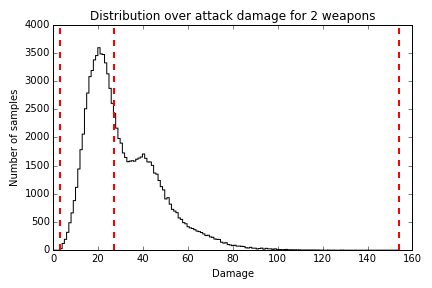

A Rejection Sampler
by Jessica B. Hamrick
Jess is a Ph.D. student at UC Berkeley where she studies human cognition by combining probabilistic models from machine learning with behavioral experiments from cognitive science. In her spare time, Jess is a core contributor to IPython and Jupyter. She also holds a B.S. and M.Eng. in Computer Science from MIT.
Introduction
Frequently, in computer science and engineering, we run into problems that can’t be solved using an equation. These problems usually involve complex systems, noisy inputs, or both. Here are just a few examples of real-world problems that do not have exact, analytic solutions:
-
You have built a computer model of an airplane, and want to determine how well the airplane will hold up under different weather conditions.
-
You want to determine whether chemical runoff from a proposed factory will affect the water supply of nearby residents, based on a model of groundwater diffusion.
-
You have a robot which captures noisy images from its camera, and want to recover the three-dimensional structure of the object that those images depict.
-
You want to compute how likely you are to win at chess if you take a particular move.
Even though these types of problems cannot be solved exactly, we can often achieve an approximate solution to them using techniques known as Monte Carlo sampling methods. In Monte Carlo methods, the key idea is to take many samples, which will then allow you to estimate the solution.1
What is Sampling?
The term sampling means generating random values from some probability distribution. For example, the value you get from rolling a six-sided die is a sample. The card you draw from the top of the deck after it has been shuffled is a sample. The location where the dart hits the board is also a sample. The only difference between these various samples is that they are generated from different probability distributions. In the case of the die, the distribution places equal weight across six values. In the case of the card, the distribution places equal weight across 52 values. In the case of the dart board, the distribution places weight across a circular area (though it might not be uniformly distributed, depending on your skill as a dart player).
There are two ways we usually want to use samples. The first is just to generate a random value to be used later: for example, randomly drawing cards in a computer game of poker. The second way that samples are used is for estimation. For example, if you suspected that your friend was playing with loaded dice, you might want to roll the dice many times to see if some numbers came up more often than you would expect. Or, you might just want to characterize the range of possibilities, as in the airplane example above. Weather is a fairly chaotic system, meaning that it is impossible to compute exactly whether the airplane will survive a particular weather situation. Instead, you could simulate the behavior of the airplane under many different weather conditions, multiple times, which would allow you to see under which conditions the airplane is most likely to fail.
Programming with Samples and Probabilities
As with most applications in computer science, you can make design decisions when programming with samples and probabilities that will influence the overall cleanliness, coherence, and correctness of your code. In this chapter, we will go through a simple example of how to sample random items in a computer game. In particular, we will focus on the design decisions which are specific to working with probabilities, including functions both for sampling and for evaluating probabilities, working with logarithms, allowing reproducibility, and separating the process of generating samples from the specific application.
A Brief Aside About Notation
We will use mathematical notation like $p(x)$ to indicate that $p$ is the probability density function (PDF) or probability mass function (PMF) over values $x$ of a random variable. A PDF is a continuous function $p(x)$ such that $\int_{-\infty}^\infty p(x)\ \mathrm{d}x=1$, whereas a PMF is a discrete function $p(x)$ such that $\sum_{x\in \mathbb{Z}} p(x)=1$, where $\mathbb{Z}$ is the set of all integers.
The probability distribution in the case of the dart board would be a continuous PDF, while the probability distribution in the case of a die would be a discrete PMF. In both cases, $p(x) \geq 0$ for all $x$; i.e., the probabilities have to be non-negative.
There are two things that we might want to do with a probability distribution. Given a value (or location) $x$, we might want to evaluate what the probability density (or mass) is at that location. In mathematical notation, we would write this as $p(x)$ (the probability density at the value $x$).
Given the PDF or PMF, we might also want to sample a value $x$ in a manner proportional to the distribution (such that we are more likely to get a sample at places where the probability is higher). In mathematical notation, we write this as $x\sim p$, to indicate that $x$ is sampled proportional to $p$.
Sampling Magical Items
As a simple example to demonstrate the various design decisions involved with programming with probabilities, let’s imagine we’re writing a roleplaying game (RPG). We would like a method of generating bonus stats for the magical items that are randomly dropped by monsters. We might decide that the maximum bonus we want an item to confer is +5, and that higher bonuses are less likely than lower bonuses. If $B$ is a random variable over the values of the bonus, then:
$$ p(B=\mathrm{+1}) = 0.55\ p(B=\mathrm{+2}) = 0.25\ p(B=\mathrm{+3}) = 0.12\ p(B=\mathrm{+4}) = 0.06\ p(B=\mathrm{+5}) = 0.02 $$
We can also specify that there are six stats (dexterity, constitution, strength, intelligence, wisdom, and charisma) that our bonus should be distributed between. So, an item with a +5 bonus could have those points distributed across different stats (e.g., +2 wisdom and +3 intelligence) or concentrated within a single stat (e.g., +5 charisma).
How would we randomly sample from this distribution? The easiest way is probably to first sample the overall item bonus, then sample the way the bonus is distributed across the stats. Conveniently, the probability distributions of the bonus and the way that it is distributed are both instances of the multinomial distribution.
The Multinomial Distribution
The multinomial distribution is used when you have several possible outcomes, and you want to characterize the probability of each of those outcomes occurring. The classic example used to explain the multinomial distribution is the ball and urn. The idea is that you have an urn with different colored balls in it (for example, 30% red, 20% blue, and 50% green). You pull out a ball, record its color, put it back in the urn, and then repeat this multiple times. In this case, an outcome corresponds to drawing a ball of a particular color, and the probability of each outcome corresponds to the proportion of balls of that color (e.g., for the outcome of drawing a blue ball, the probability is $p(\mathrm{blue})=0.20$). The multinomial distribution is then used to describe the possible combinations of outcomes when multiple balls are drawn (e.g., two green and one blue).
The code in this section is located in the file multinomial.py.
The MultinomialDistribution Class
In general, there are two use cases for a distribution: we might want to sample from that distribution, and we might want to evaluate the probability of a sample (or samples) under that distribution’s PMF or PDF. While the actual computations needed to perform these two functions are fairly different, they rely on a common piece of information: what the parameters of the distribution are. In the case of the multinomial distribution, the parameters are the event probabilities, $p$ (which correspond to the proportions of the different colored balls in the urn example above).
The simplest solution would be to simply create two functions that both take the same parameters, but are otherwise independent. However, I will usually opt to use a class for representing my distributions. There are several advantages to doing so:
- You only need to pass in the parameters once, when creating the class.
- There are additional attributes we might want to know about a distribution: the mean, variance, derivative, etc. Once we have even a handful of functions that operate on a common object, it is even more convenient to use a class rather than passing the same parameters to many different functions.
- It is usually a good idea to check that the parameter values are valid (for example, in the case of the multinomial distribution, the vector $p$ of event probabilities should sum to 1). It is much more efficient to do this check once, in the constructor of the class, rather than every time one of the functions is called.
- Sometimes computing the PMF or PDF involves computing constant values (given the parameters). With a class, we can pre-compute these constants in the constructor, rather than having to compute them every time the PMF or PDF function is called.
In practice, this is how many statistics packages work, including
SciPy’s own distributions, which are located in the scipy.stats
module. While we are using other SciPy functions, however, we are
not using their probability distributions, both for the sake of
illustration, and because there is currently no multinomial
distribution in SciPy.
Here is the constructor code for the class:
import numpy as np
class MultinomialDistribution(object):
def __init__(self, p, rso=np.random):
"""Initialize the multinomial random variable.
Parameters
----------
p: numpy array of length `k`
The event probabilities
rso: numpy RandomState object (default: None)
The random number generator
"""
# Check that the probabilities sum to 1. If they don't, then
# something is wrong! We use `np.isclose` rather than checking
# for exact equality because in many cases, we won't have
# exact equality due to floating-point error.
if not np.isclose(np.sum(p), 1.0):
raise ValueError("event probabilities do not sum to 1")
# Store the parameters that were passed in
self.p = p
self.rso = rso
# Precompute log probabilities, for use by the log-PMF, for
# each element of `self.p` (the function `np.log` operates
# elementwise over NumPy arrays, as well as on scalars.)
self.logp = np.log(self.p)
The class takes as arguments the event probabilities, $p$, and a
variable called rso. First, the constructor checks that the
parameters are valid; i.e., that p sums to 1. Then it stores
the arguments that were passed in, and uses the event probabilities to
compute the event log probabilities. (We’ll go into why this is
necessary in a bit). The rso object is what we’ll use later to
produce random numbers. (We’ll talk more about what it is a bit later
as well).
Before we get into the rest of the class, let’s go over two points related to the constructor.
Descriptive versus Mathematic Variable Names
Usually, programmers are encouraged to use descriptive variable names:
for example, it would be considered better practice to use the names
independent_variable and dependent_variable rather than x and
y. A standard rule of thumb is to never use variable names that are
only one or two characters. However, you’ll notice that in the
constructor to our MultinomialDistribution class, we use the
variable name of p, which is in violation of typical naming
conventions.
While I agree that such naming conventions should apply in almost
every domain, there is one exception: math. The difficulty with coding
up mathematical equations is that those equations usually have
variable names which are just a single letter: $x$, $y$, $\alpha$,
etc. So, if you were translating them directly into code, the easiest
variable names would be x, y, and alpha. Obviously, these are
not the most informative variable names (the name x does not convey
much information), but having more descriptive variable names can also
make it harder to switch between the the code and the
equation.
I think that when you are writing code that directly implements an equation, the same variable names should be used as those in the equation. This makes it easy to see which parts of the code are implementing which pieces of the equation. This, of course, can make the code harder to understand in isolation, so it is especially important that the comments then do a good job of explaining what the goal of the various computations are. If the equation is listed in an academic paper, the comments should reference the equation number so it can be easily looked up.
Importing NumPy
You may have noticed that we imported the numpy module as np. This
is standard practice in the world of numerical computing, because
NumPy provides a huge number of useful functions, many of which might
be used even in a single file. In the simple examples from this
chapter, we only use eleven NumPy functions, but the
number can be much higher: it is not uncommon for me to use around forty
different NumPy functions throughout a project!
There are a few options for importing NumPy. We could use from
numpy import *, but that is generally poor style, because it makes it
hard to determine where the functions came from. We could import the
functions individually with from numpy import array, log, ..., but
that gets clumsy fairly quickly. We could just use import numpy, but
this often results in code being much more difficult to read. Both of
the following examples are hard to read, but the one using np rather
than numpy is significantly clearer:
>>> numpy.sqrt(numpy.sum(numpy.dot(numpy.array(a), numpy.array(b))))
>>> np.sqrt(np.sum(np.dot(np.array(a), np.array(b))))
Sampling from a Multinomial Distribution
Taking a sample from a multinomial distribution is actually fairly
straightforward, because NumPy provides us with a function that
does it: np.random.multinomial2.
Despite the fact that this function already exists, there are a few design decisions surrounding it that we can make.
Seeding the Random Number Generator
Even though we do want to draw a random sample, we sometimes want our results to be reproducible: even though the numbers seem random, if we were to run the program again, we might want it to use the same sequence of “random” numbers.
In order to allow for the generation of such “reproducibly random”
numbers, we need to tell our sampling function how to generate the
random numbers. We can accomplish this through use of a NumPy
RandomState object, which is essentially a random number generator
object that can be passed around. It has most of the same functions as
np.random; the difference is that we get to control where the random
numbers come from. We create it as follows:
>>> import numpy as np
>>> rso = np.random.RandomState(230489)
where the number passed to the RandomState constructor is the
seed for the random number generator. As long as we instantiate it with the
same seed, a RandomState object will produce the same “random” numbers in the
same order, thus ensuring replicability:
>>> rso.rand()
0.5356709186237074
>>> rso.rand()
0.6190581888276206
>>> rso.rand()
0.23143573416770336
>>> rso.seed(230489)
>>> rso.rand()
0.5356709186237074
>>> rso.rand()
0.6190581888276206
Earlier, we saw that the constructor took an argument called rso.
This rso variable is a RandomState object that has already been
initialized. I like to make the RandomState object an optional
parameter: it is occasionally convenient to not be forced to use it,
but I do want to have the option of using it (which, if I were to
just use the np.random module, I would not be able to do).
So, if the rso variable is not given, then the constructor defaults
to np.random.multinomial. Otherwise, it uses the multinomial
sampler from the RandomState object itself3.
What’s a Parameter?
Once we’ve decided whether to use np.random.multinomial or
rso.multinomial, sampling is just a matter of calling the
appropriate function. However, there is one other decision that we
might consider: What counts as a parameter?
Earlier, I said that the outcome probabilities, $p$, were the parameters of the multinomial distribution. However, depending on who you ask, the number of events, $n$, can also be a parameter of the multinomial distribution. So, why didn’t we include $n$ as an argument to the constructor?
This question, while relatively specific to the multinomial distribution, actually comes up fairly frequently when dealing with probability distributions, and the answer really depends on the use case. For a multinomial, can you make the assumption that the number of events is always the same? If so, then it might be better to pass in $n$ as an argument to the constructor. If not, then requiring $n$ to be specified at object creation time could be very restrictive, and might even require you to create a new distribution object every time you need to draw a sample!
I usually don’t like to be that restricted by my code, and thus choose
to have n be an argument to the sample function, rather than
having it be an argument to the constructor. An alternate solution
could be to have n be an argument to the constructor, but also
include methods to allow for the value of n to be changed, without
having to create an entirely new object. For our purposes, though,
this solution is probably overkill, so we’ll stick to just having it
be an argument to sample:
def sample(self, n):
"""Samples draws of `n` events from a multinomial distribution with
outcome probabilities `self.p`.
Parameters
----------
n: integer
The number of total events
Returns
-------
numpy array of length `k`
The sampled number of occurrences for each outcome
"""
x = self.rso.multinomial(n, self.p)
return x
Evaluating the Multinomial PMF
Although we don’t explicitly need to compute the probability of the magical items that we generate, it is almost always a good idea to write a function that can compute the distribution’s probability mass function (PMF) or probability density function (PDF). Why?
One reason is that we can use it for testing: if we take many samples with our sampling function, then they should approximate the exact PDF or PMF. If after many samples the approximation is poor or obviously wrong, then we know there is a bug in our code somewhere.
Another reason to implement the PMF or PDF is that frequently, you will actually need it later down the line and simply don’t realize it initially. For example, we might want to classify our randomly generated items as common, uncommon, and rare, depending on how likely they are to be generated. To determine this, we need to be able to compute the PMF.
Finally, in many cases, your particular use case will dictate that you implement the PMF or PDF from the beginning, anyway.
The Multinomial PMF Equation
Formally, the multinomial distribution has the following equation:
$$ p(\mathbf{x}; \mathbf{p}) = \frac{(\sum_{i=1}^k x_i)!}{x_1!\cdots{}x_k!}p_1^{x_1}\cdots{}p_k^{x_k} $$
where $\mathbf{x}=[x_1, …{}, x_k]$ is a vector of length $k$ specifying the number of times each event happened, and $\mathbf{p}=[p_1, …{}, p_k]$ is a vector specifying the probability of each event occurring. As mentioned above, the event probabilities $\mathbf{p}$ are the parameters of the distribution.
The factorials in the equation above can actually be expressed using a special function, $\Gamma$, called the gamma function. When we get to writing the code, it will be more convenient and efficient to use the gamma function rather than factorial, so we will rewrite the equation using $\Gamma$:
$$ p(\mathbf{x}; \mathbf{p}) = \frac{\Gamma((\sum_{i=1}^k x_i)+1)}{\Gamma(x_1+1)\cdots{}\Gamma(x_k+1)}p_1^{x_1}\cdots{}p_k^{x_k} $$
Working with Log Values
Before getting into the actual code needed to implement the equation above, I want to emphasize one of the the most important design decisions when writing code with probabilities: working with log values. What this means is that rather than working directly with probabilities $p(x)$, we should be working with log-probabilities, $\log{p(x)}$. This is because probabilities can get very small very quickly, resulting in underflow errors.
To motivate this, consider that probabilities must range between 0 and
1 (inclusive). NumPy has a useful function, finfo, that will tell us
the limits of floating point values for our system. For example, on a
64-bit machine, we see that the smallest usable positive number (given
by tiny) is:
>>> import numpy as np
>>> np.finfo(float).tiny
2.2250738585072014e-308
While that may seem very small, it is not unusual to encounter probabilities of this magnitude, or even smaller. Moreover, it is a common operation to multiply probabilities, yet if we try to do this with very small probabilities, we encounter underflow problems:
>>> tiny = np.finfo(float).tiny
>>> # if we multiply numbers that are too small, we lose all precision
>>> tiny * tiny
0.0
However, taking the log can help alleviate this issue because we can
represent a much wider range of numbers with logarithms than we can
normally. Officially, log values range from $-\infty$ to zero. In
practice, they range from the min value returned by finfo,
which is the smallest number that can be represented, to zero. The
min value is much smaller than the log of the tiny value (which
would be our lower bound if we did not work in log space):
>>> # this is our lower bound normally
>>> np.log(tiny)
-708.39641853226408
>>> # this is our lower bound when using logs
>>> np.finfo(float).min
-1.7976931348623157e+308
So, by working with log values, we can greatly expand our range of representable numbers. Moreover, we can perform multiplication with logs by using addition, because $\log(x\cdot{}y) = \log(x) + \log(y)$. Thus, if we do the multiplication above with logs, we do not have to worry (as much) about loss of precision due to underflow:
>>> # the result of multiplying small probabilities
>>> np.log(tiny * tiny)
-inf
>>> # the result of adding small log probabilities
>>> np.log(tiny) + np.log(tiny)
-1416.7928370645282
Of course, this solution is not a magic bullet. If we need to derive the number from the logarithm (for example, to add probabilities, rather than multiply them), then we are back to underflow:
>>> tiny*tiny
0.0
>>> np.exp(np.log(tiny) + np.log(tiny))
0.0
Still, doing all our computations with logs can save a lot of headache. We might be forced to lose that precision if we need to go back to the original numbers, but we at least maintain some information about the probabilities—enough to compare them, for example—that would otherwise be lost.
Writing the PMF Code
Now that we have seen the importance of working with logs, we can actually write our function to compute the log-PMF:
def log_pmf(self, x):
"""Evaluates the log-probability mass function (log-PMF) of a
multinomial with outcome probabilities `self.p` for a draw `x`.
Parameters
----------
x: numpy array of length `k`
The number of occurrences of each outcome
Returns
-------
The evaluated log-PMF for draw `x`
"""
# Get the total number of events
n = np.sum(x)
# equivalent to log(n!)
log_n_factorial = gammaln(n + 1)
# equivalent to log(x1! * ... * xk!)
sum_log_xi_factorial = np.sum(gammaln(x + 1))
# If one of the values of self.p is 0, then the corresponding
# value of self.logp will be -inf. If the corresponding value
# of x is 0, then multiplying them together will give nan, but
# we want it to just be 0.
log_pi_xi = self.logp * x
log_pi_xi[x == 0] = 0
# equivalent to log(p1^x1 * ... * pk^xk)
sum_log_pi_xi = np.sum(log_pi_xi)
# Put it all together
log_pmf = log_n_factorial - sum_log_xi_factorial + sum_log_pi_xi
return log_pmf
For the most part, this is a straightforward implementation of the
equation above for the multinomial PMF. The gammaln function is from
scipy.special, and computes the log-gamma function,
$\log{\Gamma(x)}$. As mentioned above, it is more convenient to use
the gamma function rather than a factorial function; this is because
SciPy gives us a log-gamma function, but not a log-factorial function.
We could have computed a log factorial ourselves, using something like:
log_n_factorial = np.sum(np.log(np.arange(1, n + 1)))
sum_log_xi_factorial = np.sum([np.sum(np.log(np.arange(1, i + 1))) for i in x])
but it is easier to understand, easier to code, and more computationally efficient if we use the gamma function already built in to SciPy.
There is one edge case that we need to tackle: when one of our probabilities is zero. When $p_i=0$, then $\log{p_i}=-\infty$. This would be fine, except for the following behavior when infinity is multiplied by zero:
>>> # it's fine to multiply infinity by integers...
>>> -np.inf * 2.0
-inf
>>> # ...but things break when we try to multiply by zero
>>> -np.inf * 0.0
nan
nan means “not a number”, and it is almost always a pain to deal
with, because most computations with nan result in another
nan. So, if we don’t handle the case where $p_i=0$ and $x_i=0$, we
will end up with a nan. That will get summed with other numbers,
producing another nan, which is just not useful. To handle this, we
check specifically for the case when $x_i=0$, and set the resulting
$x_i\cdot{}\log(p_i)$ also to zero.
Let’s return for a moment to our discussion of using logs. Even if we really only need the PMF, and not the log-PMF, it is generally better to first compute it with logs, and then exponentiate it if we need to:
def pmf(self, x):
"""Evaluates the probability mass function (PMF) of a multinomial
with outcome probabilities `self.p` for a draw `x`.
Parameters
----------
x: numpy array of length `k`
The number of occurrences of each outcome
Returns
-------
The evaluated PMF for draw `x`
"""
pmf = np.exp(self.log_pmf(x))
return pmf
To further drive home the importance of working with logs, we can look at an example with just the multinomial:
>>> dist = MultinomialDistribution(np.array([0.25, 0.25, 0.25, 0.25]))
>>> dist.log_pmf(np.array([1000, 0, 0, 0])
-1386.2943611198905
>>> dist.log_pmf(np.array([999, 0, 0, 0])
-1384.9080667587707
In this case, we get extremely small probabilities (which, you will
notice, are much smaller than the tiny value we discussed
above). This is because the fraction in the PMF is huge: 1000
factorial can’t even be computed due to overflow. But, the log of
the factorial can be:
>>> from scipy.special import gamma, gammaln
>>> gamma(1000 + 1)
inf
>>> gammaln(1000 + 1)
5912.1281784881639
If we had tried to compute just the PMF using the gamma function, we
would have ended up with gamma(1000 + 1) / gamma(1000 + 1), which
results in a nan value (even though we can see that it
should be 1). But, because we do the computation with logarithms, it’s
not an issue and we don’t need to worry about it!
Sampling Magical Items, Revisited
Now that we have written our multinomial functions, we can put them to
work to generate our magical items. To do this, we will
create a class called MagicItemDistribution, located in the file
rpg.py:
class MagicItemDistribution(object):
# these are the names (and order) of the stats that all magical
# items will have
stats_names = ("dexterity", "constitution", "strength",
"intelligence", "wisdom", "charisma")
def __init__(self, bonus_probs, stats_probs, rso=np.random):
"""Initialize a magic item distribution parameterized by `bonus_probs`
and `stats_probs`.
Parameters
----------
bonus_probs: numpy array of length m
The probabilities of the overall bonuses. Each index in
the array corresponds to the bonus of that amount (e.g.,
index 0 is +0, index 1 is +1, etc.)
stats_probs: numpy array of length 6
The probabilities of how the overall bonus is distributed
among the different stats. `stats_probs[i]` corresponds to
the probability of giving a bonus point to the ith stat;
i.e., the value at `MagicItemDistribution.stats_names[i]`.
rso: numpy RandomState object (default: np.random)
The random number generator
"""
# Create the multinomial distributions we'll be using
self.bonus_dist = MultinomialDistribution(bonus_probs, rso=rso)
self.stats_dist = MultinomialDistribution(stats_probs, rso=rso)
The constructor to our MagicItemDistribution class takes parameters for
the bonus probabilities, the stats probabilities, and the random
number generator. Even though we specified above what we wanted the
bonus probabilities to be, it is generally a good idea to encode
parameters as arguments that are passed in. This leaves open the
possibility of sampling items under different distributions. (For
example, maybe the bonus probabilities would change as the player’s
level increases.) We encode the names of the stats as a class
variable, stats_names, though this could just as easily be another
parameter to the constructor.
As mentioned previously, there are two steps to sampling a magical
item: first sampling the overall bonus, and then sampling the
distribution of the bonus across the stats. As such, we code these
steps as two methods: _sample_bonus and _sample_stats:
def _sample_bonus(self):
"""Sample a value of the overall bonus.
Returns
-------
integer
The overall bonus
"""
# The bonus is essentially just a sample from a multinomial
# distribution with n=1; i.e., only one event occurs.
sample = self.bonus_dist.sample(1)
# `sample` is an array of zeros and a single one at the
# location corresponding to the bonus. We want to convert this
# one into the actual value of the bonus.
bonus = np.argmax(sample)
return bonus
def _sample_stats(self):
"""Sample the overall bonus and how it is distributed across the
different stats.
Returns
-------
numpy array of length 6
The number of bonus points for each stat
"""
# First we need to sample the overall bonus
bonus = self._sample_bonus()
# Then, we use a different multinomial distribution to sample
# how that bonus is distributed. The bonus corresponds to the
# number of events.
stats = self.stats_dist.sample(bonus)
return stats
We could have made these a single method—especially since
_sample_stats is the only function that depends on
_sample_bonus—but I have chosen to keep them separate, both
because it makes the sampling routine easier to understand, and
because breaking it up into smaller pieces makes the code easier to
test.
You’ll also notice that these methods are prefixed with an underscore,
indicating that they’re not really meant to be used outside the
class. Instead, we provide the function sample:
def sample(self):
"""Sample a random magical item.
Returns
-------
dictionary
The keys are the names of the stats, and the values are
the bonus conferred to the corresponding stat.
"""
stats = self._sample_stats()
item_stats = dict(zip(self.stats_names, stats))
return item_stats
The sample function does essentially the same thing as
_sample_stats, except that it returns a dictionary with the stats’
names as keys. This provides a clean and understandable interface for
sampling items—it is obvious which stats have how many bonus
points—but it also keeps open the option of using just
_sample_stats if one needs to take many samples and efficiency is
required.
We use a similar design for evaluating the probability of
items. Again, we expose high-level methods pmf and log_pmf which
take dictionaries of the form produced by sample:
def log_pmf(self, item):
"""Compute the log probability of the given magical item.
Parameters
----------
item: dictionary
The keys are the names of the stats, and the values are
the bonuses conferred to the corresponding stat.
Returns
-------
float
The value corresponding to log(p(item))
"""
# First pull out the bonus points for each stat, in the
# correct order, then pass that to _stats_log_pmf.
stats = np.array([item[stat] for stat in self.stats_names])
log_pmf = self._stats_log_pmf(stats)
return log_pmf
def pmf(self, item):
"""Compute the probability the given magical item.
Parameters
----------
item: dictionary
The keys are the names of the stats, and the values are
the bonus conferred to the corresponding stat.
Returns
-------
float
The value corresponding to p(item)
"""
return np.exp(self.log_pmf(item))
These methods rely on _stats_log_pmf, which computes the
probability of the stats (but which takes an array rather than a
dictionary):
def _stats_log_pmf(self, stats):
"""Evaluate the log-PMF for the given distribution of bonus points
across the different stats.
Parameters
----------
stats: numpy array of length 6
The distribution of bonus points across the stats
Returns
-------
float
The value corresponding to log(p(stats))
"""
# There are never any leftover bonus points, so the sum of the
# stats gives us the total bonus.
total_bonus = np.sum(stats)
# First calculate the probability of the total bonus
logp_bonus = self._bonus_log_pmf(total_bonus)
# Then calculate the probability of the stats
logp_stats = self.stats_dist.log_pmf(stats)
# Then multiply them together (using addition, because we are
# working with logs)
log_pmf = logp_bonus + logp_stats
return log_pmf
The method _stats_log_pmf, in turn, relies on _bonus_log_pmf,
which computes the probability of the overall bonus:
def _bonus_log_pmf(self, bonus):
"""Evaluate the log-PMF for the given bonus.
Parameters
----------
bonus: integer
The total bonus.
Returns
-------
float
The value corresponding to log(p(bonus))
"""
# Make sure the value that is passed in is within the
# appropriate bounds
if bonus < 0 or bonus >= len(self.bonus_dist.p):
return -np.inf
# Convert the scalar bonus value into a vector of event
# occurrences
x = np.zeros(len(self.bonus_dist.p))
x[bonus] = 1
return self.bonus_dist.log_pmf(x)
We can now create our distribution as follows:
>>> import numpy as np
>>> from rpg import MagicItemDistribution
>>> bonus_probs = np.array([0.0, 0.55, 0.25, 0.12, 0.06, 0.02])
>>> stats_probs = np.ones(6) / 6.0
>>> rso = np.random.RandomState(234892)
>>> item_dist = MagicItemDistribution(bonus_probs, stats_probs, rso=rso)
Once created, we can use it to generate a few different items:
>>> item_dist.sample()
{'dexterity': 0, 'strength': 0, 'constitution': 0,
'intelligence': 0, 'wisdom': 0, 'charisma': 1}
>>> item_dist.sample()
{'dexterity': 0, 'strength': 0, 'constitution': 1,
'intelligence': 0, 'wisdom': 2, 'charisma': 0}
>>> item_dist.sample()
{'dexterity': 1, 'strength': 0, 'constitution': 1,
'intelligence': 0, 'wisdom': 0, 'charisma': 0}
And, if we want, we can evaluate the probability of a sampled item:
>>> item = item_dist.sample()
>>> item
{'dexterity': 0, 'strength': 0, 'constitution': 0,
'intelligence': 0, 'wisdom': 2, 'charisma': 0}
>>> item_dist.log_pmf(item)
-4.9698132995760007
>>> item_dist.pmf(item)
0.0069444444444444441
Estimating Attack Damage
We’ve seen one application of sampling: generating
random items that monsters drop. I mentioned earlier that sampling can
also be used when you want to estimate something from the distribution
as a whole, and there are certainly cases in which we could use our
MagicItemDistribution to do this. For example, let’s say that damage in
our RPG works by rolling some number of D12s (twelve-sided dice). The
player gets to roll one die by default, and then add dice according to
their strength bonus. So, for example, if they have a +2 strength
bonus, they can roll three dice. The damage dealt is then the sum of
the dice.
We might want to know how much damage a player might deal after finding some number of weapons; e.g., as a factor in setting the difficulty of monsters. Let’s say that after collecting two items, we want the player to be able to defeat monsters within three hits in about 50% of the battles. How many hit points should the monster have?
One way to answer this question is through sampling. We can use the following scheme:
- Randomly pick a magic item.
- Based on the item’s bonuses, compute the number of dice that will be rolled when attacking.
- Based on the number of dice that will be rolled, generate a sample for the damage inflicted over three hits.
- Repeat steps 1-3 many times. This will result in an approximation to the distribution over damage.
Implementing a Distribution Over Damage
The class DamageDistribution (also in rpg.py) shows an
implementation of this scheme:
class DamageDistribution(object):
def __init__(self, num_items, item_dist,
num_dice_sides=12, num_hits=1, rso=np.random):
"""Initialize a distribution over attack damage. This object can
sample possible values for the attack damage dealt over
`num_hits` hits when the player has `num_items` items, and
where attack damage is computed by rolling dice with
`num_dice_sides` sides.
Parameters
----------
num_items: int
The number of items the player has.
item_dist: MagicItemDistribution object
The distribution over magic items.
num_dice_sides: int (default: 12)
The number of sides on each die.
num_hits: int (default: 1)
The number of hits across which we want to calculate damage.
rso: numpy RandomState object (default: np.random)
The random number generator
"""
# This is an array of integers corresponding to the sides of a
# single die.
self.dice_sides = np.arange(1, num_dice_sides + 1)
# Create a multinomial distribution corresponding to one of
# these dice. Each side has equal probabilities.
self.dice_dist = MultinomialDistribution(
np.ones(num_dice_sides) / float(num_dice_sides), rso=rso)
self.num_hits = num_hits
self.num_items = num_items
self.item_dist = item_dist
def sample(self):
"""Sample the attack damage.
Returns
-------
int
The sampled damage
"""
# First, we need to randomly generate items (the number of
# which was passed into the constructor).
items = [self.item_dist.sample() for i in xrange(self.num_items)]
# Based on the item stats (in particular, strength), compute
# the number of dice we get to roll.
num_dice = 1 + np.sum([item['strength'] for item in items])
# Roll the dice and compute the resulting damage.
dice_rolls = self.dice_dist.sample(self.num_hits * num_dice)
damage = np.sum(self.dice_sides * dice_rolls)
return damage
The constructor takes as arguments the number of sides the dice have,
how many hits we want to compute damage over, how many items the
player has, a distribution over magic items (of type
MagicItemDistribution) and a random state object. By default, we set
num_dice_sides to 12 because, while it is technically a parameter,
it is unlikely to change. Similarly, we set num_hits to 1 as a
default because a more likely use case is that we just want to take
one sample of the damage for a single hit.
We then implement the actual sampling logic in sample. (Note the
structural similarity to MagicItemDistribution.) First, we
generate a set of possible magic items that the player has. Then, we
look at the strength stat of those items, and from that compute the
number of dice to roll. Finally, we roll the dice (again relying on
our trusty multinomial functions) and compute the damage from that.
What Happened to Evaluating Probabilities?
You may have noticed that we didn’t include a log_pmf or pmf
function in our DamageDistribution. This is because we actually do
not know what the PMF should be! This would be the equation:
$$ \sum_{{item}_1, …{}, {item}_m} p(\mathrm{damage} \vert \mathrm{item}_1,…{},\mathrm{item}_m)p(\mathrm{item}_1)\cdots{}p(\mathrm{item}_m) $$
What this equation says is that we would need to compute the probability of every possible damage amount, given every possible set of $m$ items. We actually could compute this through brute force, but it wouldn’t be pretty. This is actually a perfect example of a case where we want to use sampling to approximate the solution to a problem that we can’t compute exactly (or which would be very difficult to compute exactly). So, rather than having a method for the PMF, we’ll show in the next section how we can approximate the distribution with many samples.
Approximating the Distribution
Now we have the machinery to answer our question from earlier: If the player has two items, and we want the player to be able to defeat the monster within three hits 50% of the time, how many hit points should the monster have?
First, we create our distribution object, using the same item_dist
and rso that we created earlier:
>>> from rpg import DamageDistribution
>>> damage_dist = DamageDistribution(2, item_dist, num_hits=3, rso=rso)
Now we can draw a bunch of samples, and compute the 50th percentile (the damage value that is greater than 50% of the samples):
>>> samples = np.array([damage_dist.sample() for i in xrange(100000)])
>>> samples.min()
3
>>> samples.max()
154
>>> np.percentile(samples, 50)
27.0
If we were to plot a histogram of how many samples we got for each amount of damage, it would look something like Figure: Damage Distribution.

There is a pretty wide range of damage that the player could potentially inflict, but it has a long tail: the 50th percentile is at 27 points, meaning that in half the samples, the player inflicted no more than 27 points of damage. Thus, if we wanted to use this criteria for setting monster difficulty, we would give them 27 hit points.Summary
In this chapter, we’ve seen how to write code for generating samples from a non-standard probability distribution, and how to compute the probabilities for those samples as well. In working through this example, we’ve covered several design decisions that are applicable in the general case:
- Representing probability distributions using a class, and including functions both for sampling and for evaluating the PMF (or PDF).
- Computing the PMF (or PDF) using logarithms.
- Generating samples from a random number generator object to enable reproducible randomness.
- Writing functions whose inputs/outputs are clear and understandable
(e.g., using dictionaries as the output of
MagicItemDistribution.sample) while still exposing the less clear but more efficient and purely numeric version of those functions (e.g.,MagicItemDistribution._sample_stats).
Additionally, we’ve seen how sampling from a probability distribution can be useful both for producing single random values (e.g., generating a single magical item after defeating a monster) and for computing information about a distribution that we would otherwise not know (e.g., discovering how much damage a player with two items is likely to deal). Almost every type of sampling you might encounter falls under one of these two categories; the differences only have to do with what distributions you are sampling from. The general structure of the code—independent of those distributions—remains the same.
-
This chapter assumes some familiarity with statistics and probability theory. ↩
-
NumPy includes functions to draw samples from many different types of distributions. For a full list, take a look at the random sampling module,
np.random. ↩ -
The functions in
np.randomactually do rely on a random number generator that we can control: NumPy’s global random number generator. You can set the global seed withnp.seed. There’s a tradeoff to using the global generator vs. a localRandomStateobject. If you use the global generator, then you don’t have to pass around aRandomStateobject everywhere. However, you also run the risk of depending on some third party code that also uses the global generator without your knowledge. If you use a local object, then it is easier to find out whether there is nondeterminism coming from somewhere other than your own code. ↩